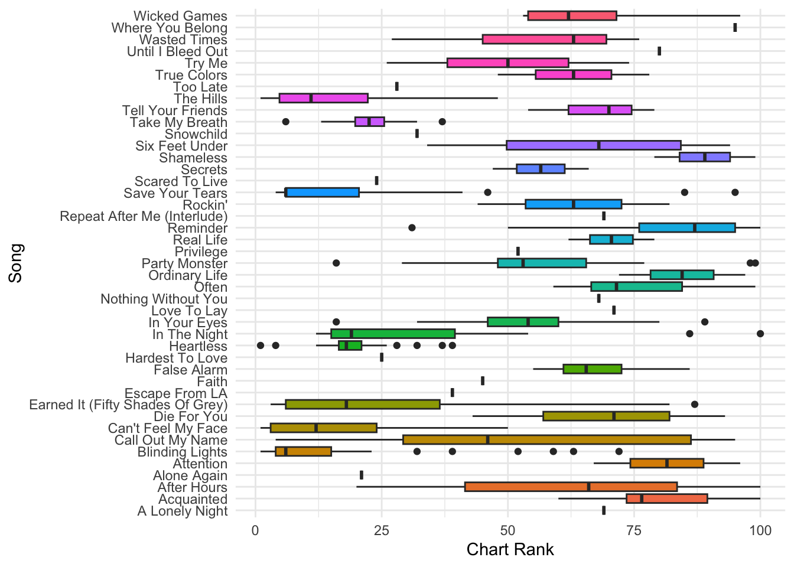

The Weeknd: Chart Performance Analysis
The Weeknd (Abel Tesfaye) is a Canadian singer, songwriter, and producer known for his distinctive voice and genre-blending music. He gained fame with his 2011 mixtapes House of Balloons and later global hits like “Can’t Feel My Face”, “Blinding Lights”, and “Starboy”. His music blends R&B, pop, and synthwave, and he’s known for his enigmatic persona and immersive performances.
The Weeknd: Song Rank Over Time
This plot visualizes the performance of The Weeknd’s songs on the Billboard Hot 100 over time.
The highest rank song is The Hills,Can’t Feel My Face,Hearthless,Blinding Light’s
The Weeknd: Rank Distribution by Song
This plot visualizes the distribution of chart rankings for each song by The Weeknd on the Billboard Hot 100 throughout its time on the chart.
